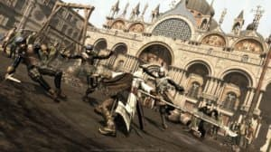

✅
Изменения: Репак от Игрухи переработан, уменьшен размер.
Описание игры:
Assassin’s Creed II – новая серия приключений убийцы, после успеха первой части, разработчики решили продолжать свою идею и воплотили новый сюжет игры. Герой отправляется в Италию, действие происходит в 1476 году. Дворянин из Флоренции – Эцио, поначалу не привлекает особого внимания, покуда не начинает заниматься решением всех свои дел (собственно, заданий по сюжету).
Год выпуска: 2010
Жанр: 3rd Person
Разработчик: Ubisoft
Издатель: Ubisoft
Платформа: PC
Тип издания: RePack
Язык интерфейса: Русский
Язык озвучки: Русский
Таблэтка: Вшито (SKIDROW)
Системные требования:
- ОС: XP / Vista / 7 / 8 / 10 (32-64-bit)
- Процессор: Intel Core 2 Duo 2.8 GHz or AMD Athlon X2 Dual-Core 5200+
- Оперативная память: 2 GB
- Видеокарта: Nvidia Geforce 9800 или Radeon HD 4750
- Место на жестком диске: 5.5 GB
Screenshots:

Размер: 3.14 GB | RePack от Igruha
Скачать торрентОсобенности репака:
- Ничего не вырезано / ничего не перекодировано
- Версия игры: 1.01
- Вшиты все DLC
- Вшит Update от Cleric[V]